knitr::opts_chunk$set(echo = TRUE)
library(revolver)Since the new release of REVOLVER (>= 0.3), we have implemented all plotting functions using ggplot2.
All functions now return either a ggplot object, or a more complext figure obtained by assembling ggplot objects either via ggarrange (package ggpubr) or plot_grid (package cowplot) cowplot. Notice that some functions might be only applicable after fits or clusters have been computed (the package will raise errors if you try to call a function on an object that does not have the required information to create the plot).
In this vignette, we apply the plotting functions to one of the cohort objects released in the evoverse.datasets R package.
# Data released in the 'evoverse.datasets'
data('TRACERx_NEJM_2017_REVOLVER', package = 'evoverse.datasets')Plotting cohort-level data
You can plot various information about the drivers in the cohort, and the trajectories detected in the cohort. See the manual of each one of these functions to understand non-trivial plots, and how to customize the input parameters.
# Plot the occurrence of drivers across the cohort.
plot_drivers_occurrence(TRACERx_NEJM_2017_REVOLVER)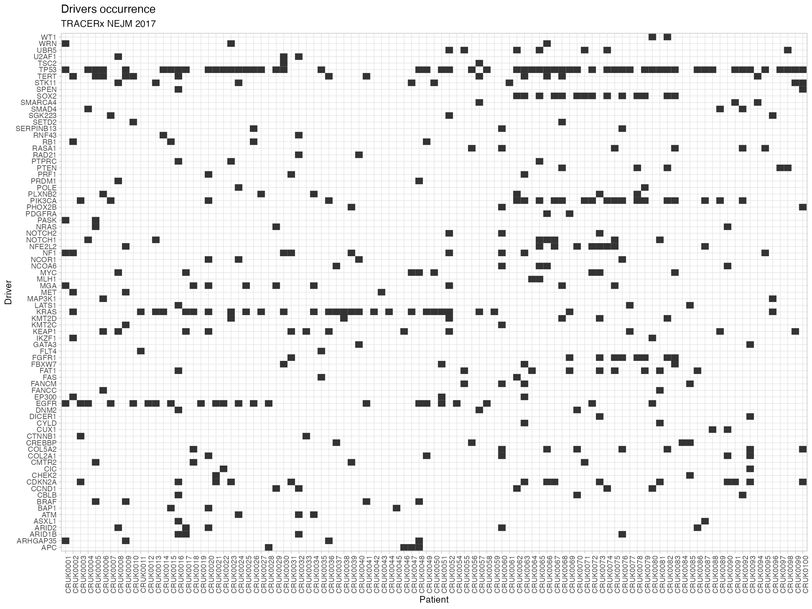
# Plot the barplot of drivers' occurrences (clonal vs subclonal)
plot_drivers_clonality(TRACERx_NEJM_2017_REVOLVER) 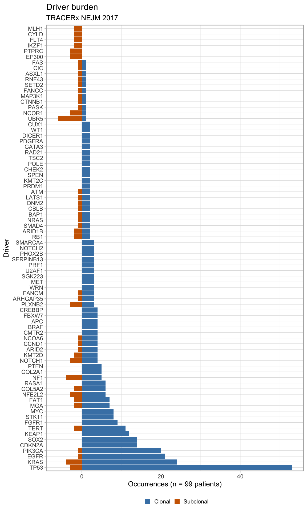
# Plot the graph-alike summary statistics for the cohort drivers.
plot_drivers_graph(TRACERx_NEJM_2017_REVOLVER)
#>
#> =-=-=-=-=-=-=-=-=-=-=-=-=-=-=-=-=-=-
#> Enrichment test for incoming edges
#> =-=-=-=-=-=-=-=-=-=-=-=-=-=-=-=-=-=-
#> # A tibble: 49 x 15
#> estimate p.value conf.low conf.high method alternative from to POS_POS
#> <dbl> <dbl> <dbl> <dbl> <chr> <chr> <chr> <chr> <int>
#> 1 23.0 1.82e-9 8.60 Inf Fisher'… greater EGFR TP53 13
#> 2 25.4 1.36e-6 4.81 Inf Fisher'… greater GL PIK3… 20
#> 3 10.5 6.27e-6 4.19 Inf Fisher'… greater CDKN… TP53 10
#> 4 12.6 8.68e-6 3.56 Inf Fisher'… greater GL EGFR 20
#> 5 Inf 1.48e-5 5.16 Inf Fisher'… greater GL CDKN… 14
#> 6 Inf 1.48e-5 5.16 Inf Fisher'… greater GL SOX2 14
#> 7 19.8 1.71e-5 5.37 Inf Fisher'… greater TP53 FAT1 7
#> 8 Inf 2.10e-5 9.42 Inf Fisher'… greater RASA1 TP53 5
#> 9 Inf 5.99e-5 14.5 Inf Fisher'… greater BRAF TERT 3
#> 10 Inf 7.41e-5 4.31 Inf Fisher'… greater GL KEAP1 12
#> # … with 39 more rows, and 6 more variables: POS_NEG <int>, NEG_POS <int>,
#> # NEG_NEG <int>, alpha_level <dbl>, N <int>, psign <lgl>
#> Registered S3 method overwritten by 'vegan':
#> method from
#> rev.hclust dendextend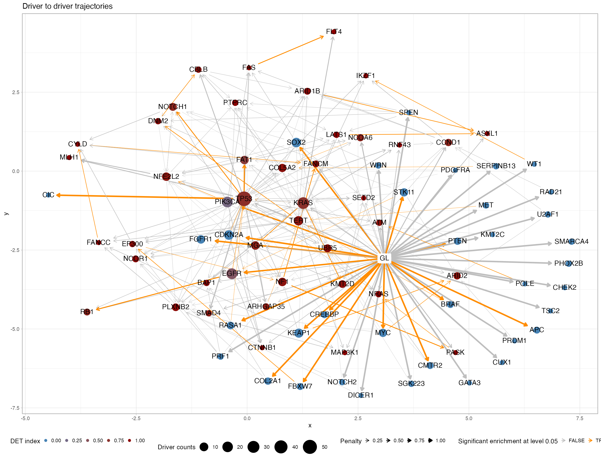
This graph plot can be simplified reduce the entries used to generate the edges - try for instance using min.occurrences = 5.
You can also plot the penalty of the fit, and the DET index derived from that
# Plot the index of Divergent Evolutionary Trajectories
plot_penalty(TRACERx_NEJM_2017_REVOLVER)
#>
#> =-=-=-=-=-=-=-=-=-=-=-=-=-=-=-=-=-=-
#> Enrichment test for incoming edges
#> =-=-=-=-=-=-=-=-=-=-=-=-=-=-=-=-=-=-
#> # A tibble: 49 x 15
#> estimate p.value conf.low conf.high method alternative from to POS_POS
#> <dbl> <dbl> <dbl> <dbl> <chr> <chr> <chr> <chr> <int>
#> 1 23.0 1.82e-9 8.60 Inf Fisher'… greater EGFR TP53 13
#> 2 25.4 1.36e-6 4.81 Inf Fisher'… greater GL PIK3… 20
#> 3 10.5 6.27e-6 4.19 Inf Fisher'… greater CDKN… TP53 10
#> 4 12.6 8.68e-6 3.56 Inf Fisher'… greater GL EGFR 20
#> 5 Inf 1.48e-5 5.16 Inf Fisher'… greater GL CDKN… 14
#> 6 Inf 1.48e-5 5.16 Inf Fisher'… greater GL SOX2 14
#> 7 19.8 1.71e-5 5.37 Inf Fisher'… greater TP53 FAT1 7
#> 8 Inf 2.10e-5 9.42 Inf Fisher'… greater RASA1 TP53 5
#> 9 Inf 5.99e-5 14.5 Inf Fisher'… greater BRAF TERT 3
#> 10 Inf 7.41e-5 4.31 Inf Fisher'… greater GL KEAP1 12
#> # … with 39 more rows, and 6 more variables: POS_NEG <int>, NEG_POS <int>,
#> # NEG_NEG <int>, alpha_level <dbl>, N <int>, psign <lgl>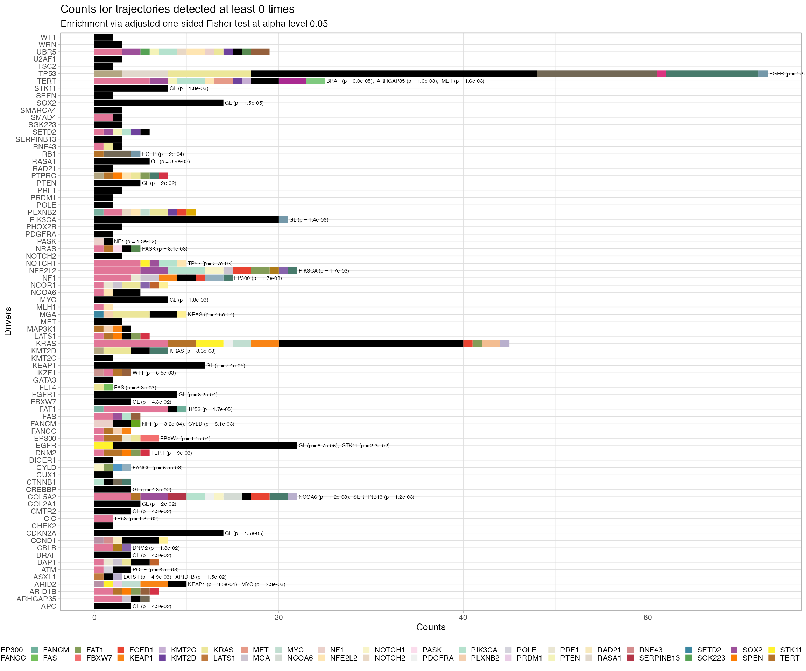
# Plot the index of Divergent Evolutionary Trajectories
plot_DET_index(TRACERx_NEJM_2017_REVOLVER)
#> # A tibble: 79 x 4
#> driver diversity N DET_index
#> <chr> <dbl> <int> <dbl>
#> 1 APC 0 1 0
#> 2 BRAF 0 1 0
#> 3 CDKN2A 0 1 0
#> 4 CHEK2 0 1 0
#> 5 CIC 0 1 0
#> 6 CMTR2 0 1 0
#> 7 COL2A1 0 1 0
#> 8 CREBBP 0 1 0
#> 9 CUX1 0 1 0
#> 10 DICER1 0 1 0
#> # … with 69 more rows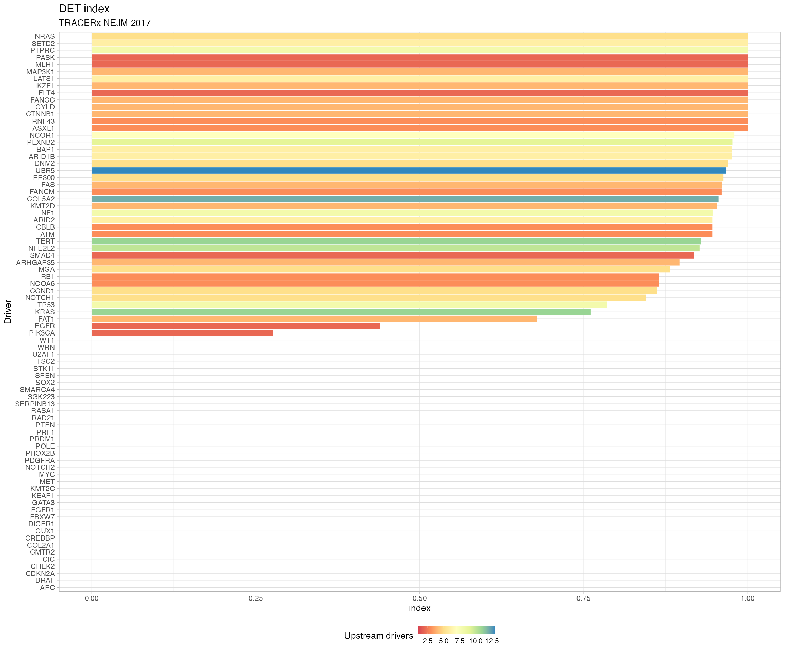
Plotting patient’s data and trees
You can plot the data and the trees of a patient.
# Plot the data histogram for a patient.
plot_patient_CCF_histogram(TRACERx_NEJM_2017_REVOLVER, 'CRUK0002')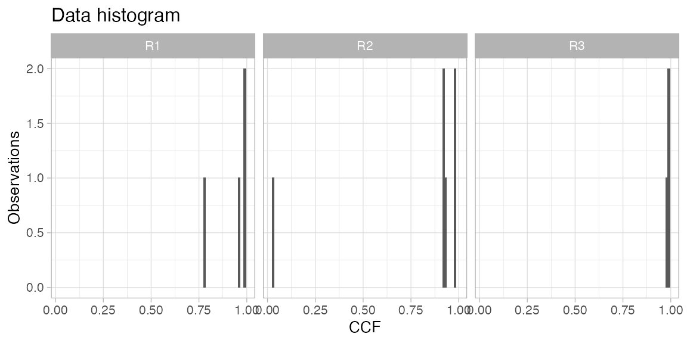
# Plot the mutation burden for a patient.
plot_patient_mutation_burden(TRACERx_NEJM_2017_REVOLVER, 'CRUK0002')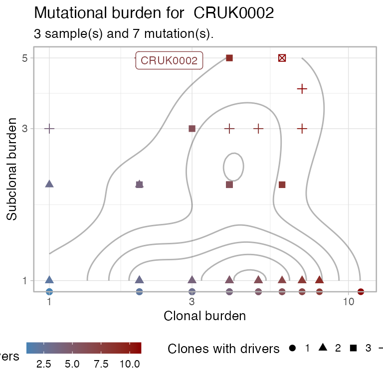
# Plot the oncoprint for a patient.
plot_patient_oncoprint(TRACERx_NEJM_2017_REVOLVER, 'CRUK0002')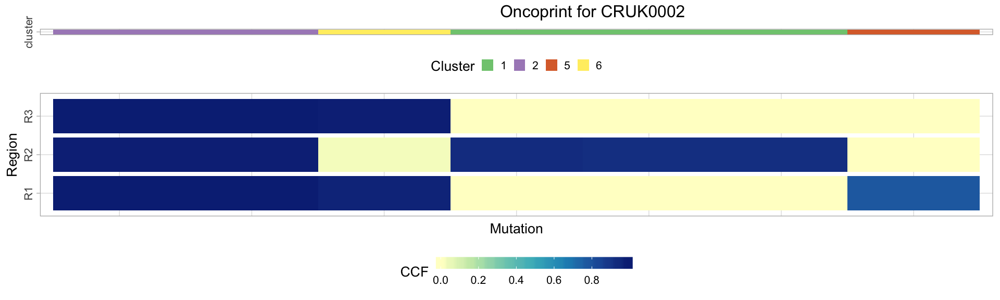
A full profile of the data available for a patient can be print using plot_patient_data. This function uses the above functions in combination with functions that are specific to the packages that implements the trees of the current cohort, in order to create other visualization of the data.
In the case of this cohort, since the patients have CCF-based clone trees, the reference plotting functions are from the ctree package
# Plot a number of different measurements for the patient
plot_patient_data(TRACERx_NEJM_2017_REVOLVER, 'CRUK0002')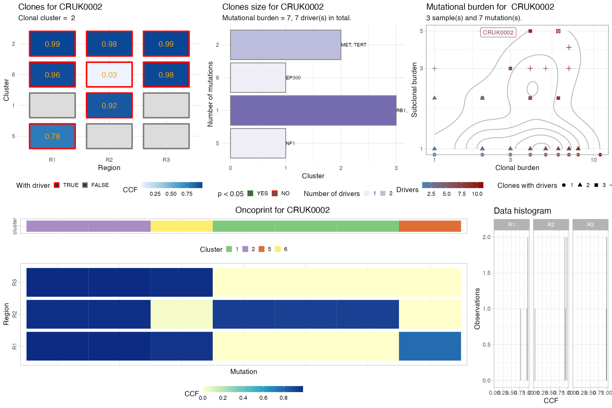
In a similar way, trees are plot using functions from the ctree package, called by REVOLVER.
# Plot REVOLVER trees for a patient.
plot_patient_trees(TRACERx_NEJM_2017_REVOLVER, 'CRUK0002')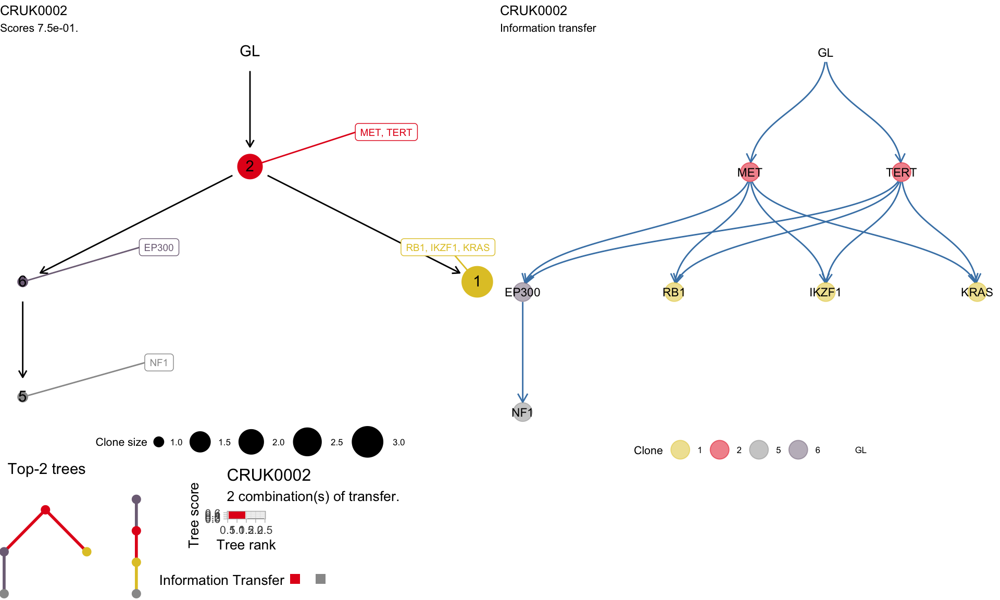
The above function plots the tree score as
# Plot REVOLVER trees for a patient.
plot_patient_trees_scores(TRACERx_NEJM_2017_REVOLVER, 'CRUK0002')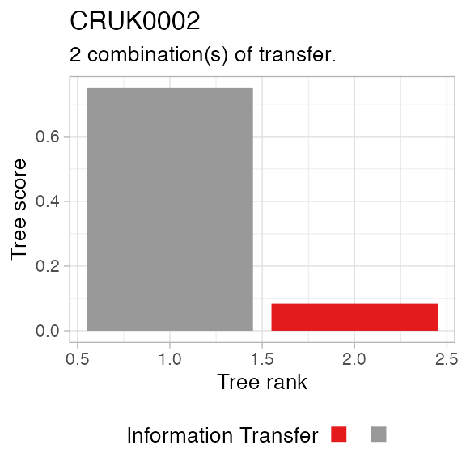
Plotting REVOLVER clusters and jackknife statistics
The results of using REVOLVER to cluster your cohort can be visualised with two functions
# Plot the heatmaps of REVOLVER"s clusters, as tiles.
plot_clusters(TRACERx_NEJM_2017_REVOLVER)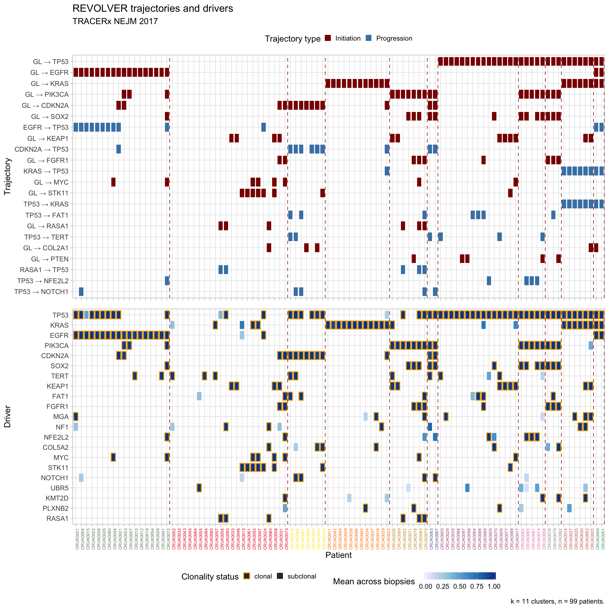
The top tile is patients vs trajectories, and bottom is patients vs drivers. For drivers colours reflect mean CCF/ binary values of a driver in every patient, and clonality status. For trajectories colours reflect if they are initiating or progressing, depending on the present of GL in the trajectory (GL stands for germline).
The dendrogram of the clusters can be visualised - notice the colours and patients’ ordering that are matched in these two functions.
# Plot the dendrogram of REVOLVER"s clusters
plot_dendrogram(TRACERx_NEJM_2017_REVOLVER)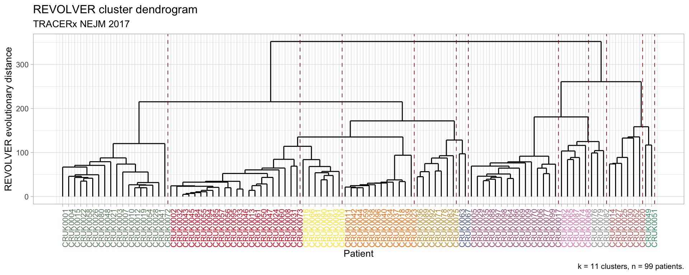
You can also compute the number of trajectories per cluster, and their frequency.
# Plot the trajectories detected in at least 10 patients per cluster
plot_trajectories_per_cluster(TRACERx_NEJM_2017_REVOLVER, min_counts = 10)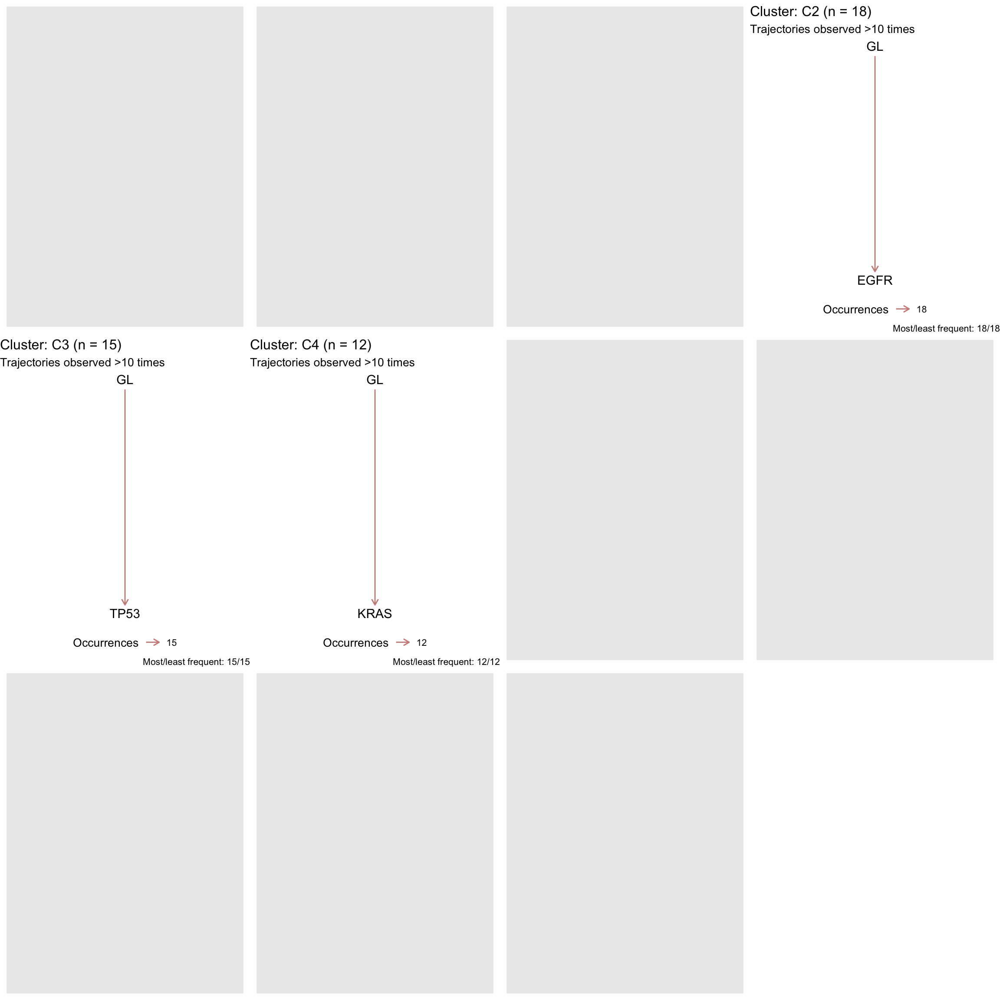
# Plot the trajectories detected in at least 30% patients per cluster
plot_trajectories_per_cluster(TRACERx_NEJM_2017_REVOLVER, min_counts = .3)
#> → min_counts in [0,1], interpreting that as a proportion.
#> → min_counts in [0,1], interpreting that as a proportion.
#> → min_counts in [0,1], interpreting that as a proportion.
#> → min_counts in [0,1], interpreting that as a proportion.
#> → min_counts in [0,1], interpreting that as a proportion.
#> → min_counts in [0,1], interpreting that as a proportion.
#> → min_counts in [0,1], interpreting that as a proportion.
#> → min_counts in [0,1], interpreting that as a proportion.
#> → min_counts in [0,1], interpreting that as a proportion.
#> → min_counts in [0,1], interpreting that as a proportion.
#> → min_counts in [0,1], interpreting that as a proportion.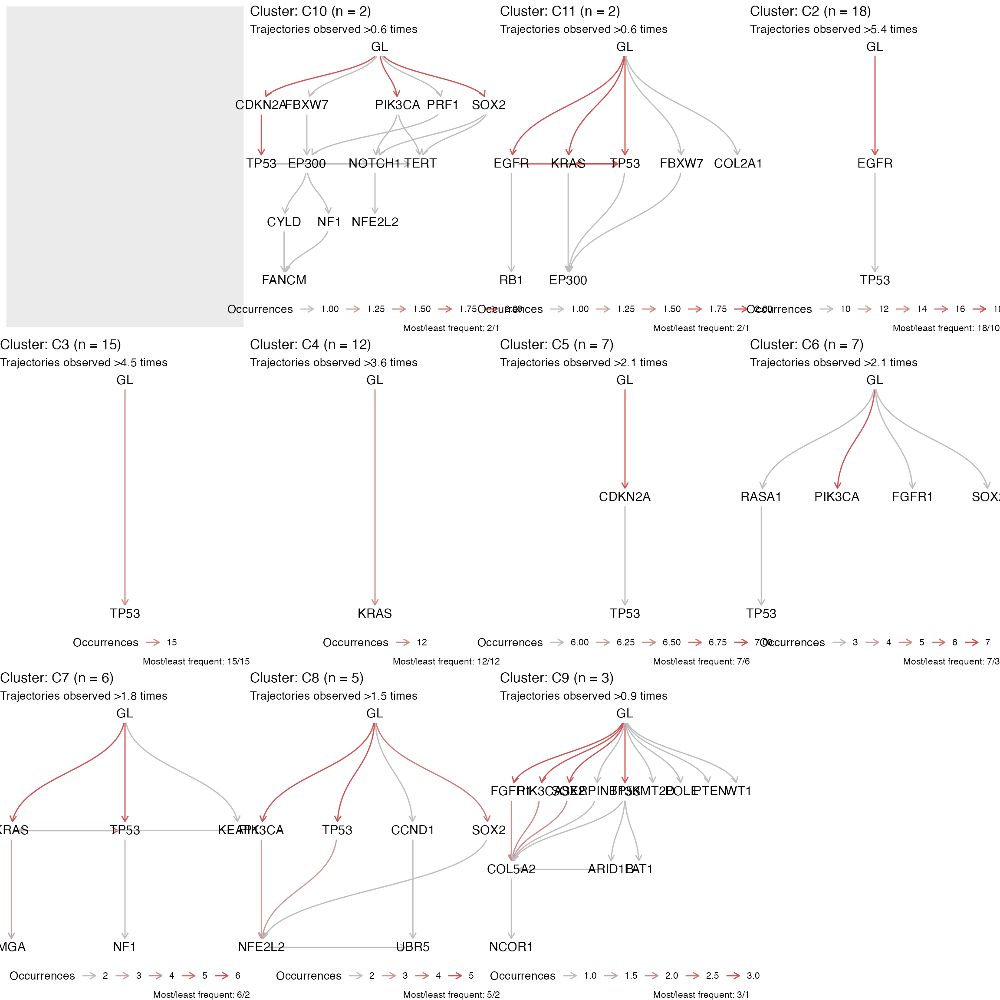
After jackknife, you can also plot the co-clustering probability of the patients, the clustering stability and other statistics about the trajectories.
# Plot the patients' jackknife co-clustering probability
plot_jackknife_coclustering(TRACERx_NEJM_2017_REVOLVER)
# Plot the patients' jackknife cluster staability
plot_jackknife_cluster_stability(TRACERx_NEJM_2017_REVOLVER)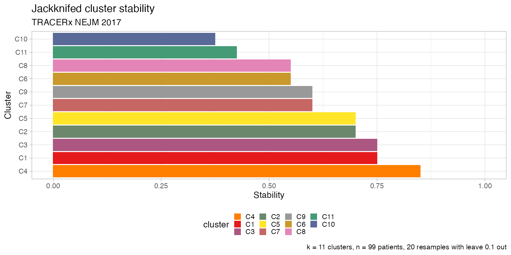
# Plot the patients' jackknife trajectory frequencies.
plot_jackknife_trajectories_stability(TRACERx_NEJM_2017_REVOLVER)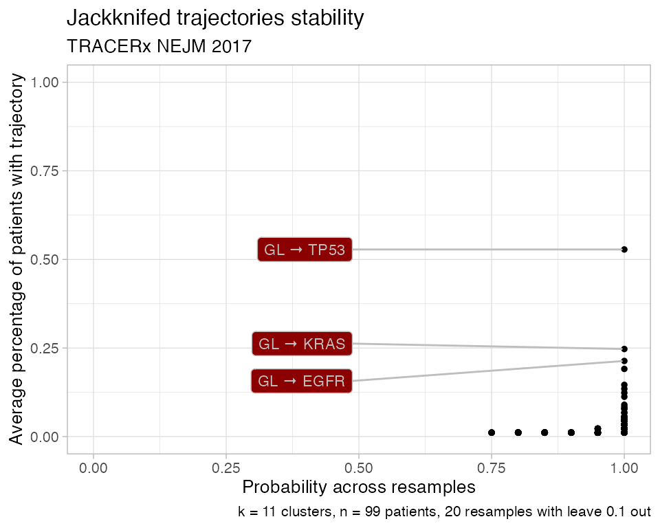